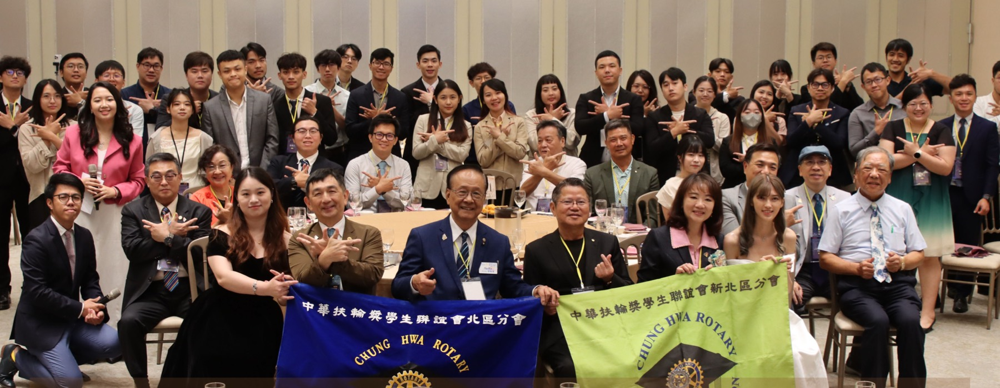

Leadership Portrait
把婉華與詠文這一年的角色與軌跡，獨立成一頁來看。
這一頁集中整理 北區分會長洪婉華 Hannah 與 新北區分會長鄭詠文 Victoria 的正式資料與年度回顧。 內容依交接典禮手冊整理，適合直接用來對外介紹本年度會長與年度主軸。
介紹重點
正式資料
年度角色
手冊摘要
Leadership Page
Hannah & Victoria, 2025-26.
把活動頁的時間軸與人物介紹分開之後，會長頁可以更專心地呈現這一年兩位會長的定位、背景與帶領脈絡。

2025-26 Leadership
詠文・婉華
從交接典禮正式啟程，也替整個年度留下最清楚的開場畫面。
凝聚
讓聯誼會成為一個有歸屬感、可以一起成長的年度團隊。
傳承
從交接到迎新，把扶輪精神與夥伴關係一棒一棒接下去。
視野
透過多元主題例會與公益活動，讓聯誼會不只停留在聚會本身。
President Profiles
2025-26 年度會長介紹
依交接典禮手冊整理本年度兩位會長的正式資料與年度回顧。這一年的節奏，從交接、九份、宜蘭幹訓，到一整排例會與公益活動，都是由婉華與詠文一起帶著大家往前走。
01
北區分會長
洪婉華 Hannah
允許一切的發生，遇到問題，解決問題。
依手冊中的卸任感言整理，婉華把這一年視為一段從緊張籌備走向穩定承擔的成長歷程；她也特別感謝扶輪前輩、幹部與獎學生夥伴，讓聯誼會成為一個充滿溫暖與凝聚力的大家庭。
02
新北區分會長
鄭詠文 Victoria
聯誼會不只是交流的平台，更是探索自我、實現夢想的起點。
依手冊中的卸任感言整理，詠文回顧了從交接典禮、九份畢旅、宜蘭幹部訓練到多元主題例會的一整年，希望每位夥伴都能在聯誼會找到歸屬感，也透過每一場活動看見更寬廣的世界。
Source Note
資料來源說明
這頁的正式名稱與背景資訊優先整理自交接典禮手冊；如果要看這一年每個月份對應的活動時間、照片與附件，直接前往 活動頁 會最完整。